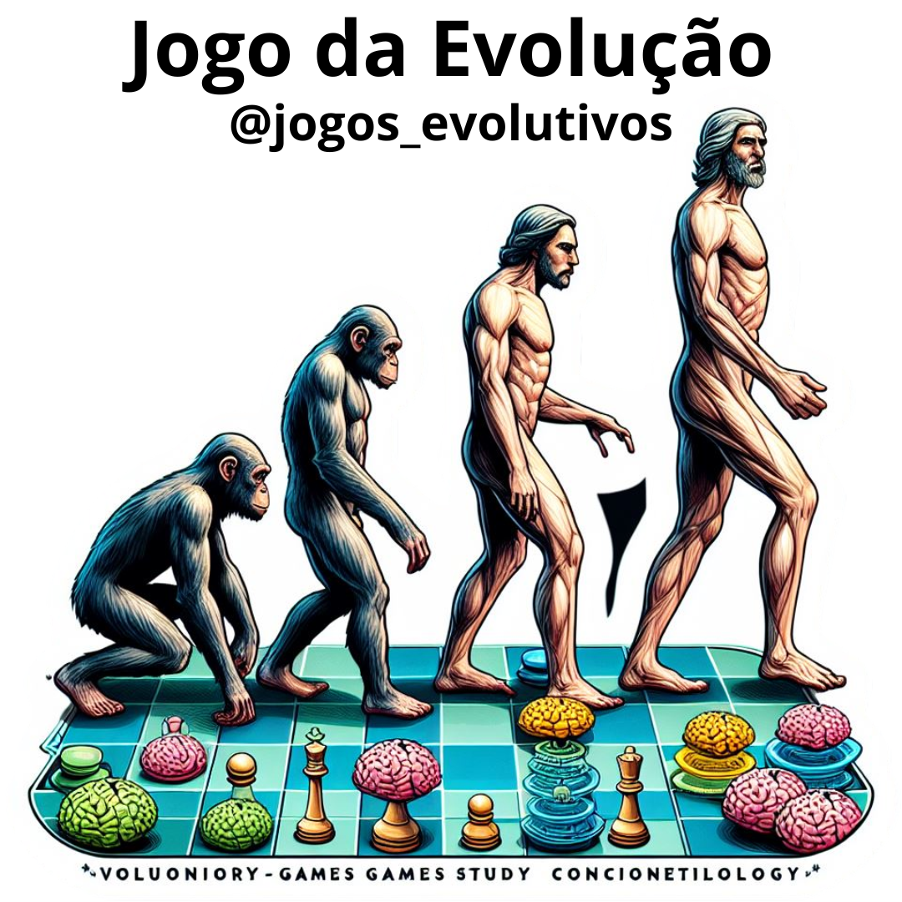

Girar a bússola
1
2
3
4
5
6
7
8
Escala Evolutiva
Nível 3 (Pré-Serenão Vulgar - 25%)
Nível 9 (Desperto - 50%)
Nível 12 (Evoluciólogo - 75%)
Nível 13 (Serenão - 100%)
Nível 14 (Consciex Livre)
Proéxis
Proéxis 1
Proéxis 2
Proéxis 3
Compléxis
Quiz
Pontos de Quiz: 0
Próxima Pergunta
Cosmoética
Positivo:
Negativo:
Pontuação: 0
Holossoma
Soma
Psicosoma
Mentalsoma
Chacras
Coronochacra
Frontochacra
Laringochacra
Cardiochacra
Esplenicochacra
Umbilicochacra
Sexochacra
Energossoma
Indicadores
Saldo da FEP: 0